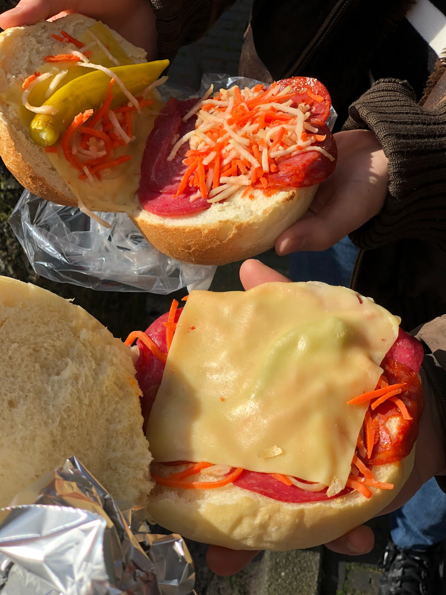

Two slices of salami, two slices of chorizo, some vegetable strips, cheese and a green pepper. It might not sound that controversial, but it has been the source of the ongoing competition between Broodje Mario and Broodje Carlo: two Italian sandwich shops, located right next to each other at the Janskerkhof. They sell the same standard Italian sandwich, use the same ingredients, charge the same price (€3,-) and enjoy the same popularity. The taste is very comparable. It got us thinking - what are the origins of this Italian ‘sandwich-war’ ?
 top: Broodje Mariobottom: Broodje Carlo
It is important to note that not all Utrecht’s Italian sandwich shops are located at the Janskerkhof. At the Oudegracht, another stall with the name ‘Broodje Mario’ has dominated the area for years. Another Italian entrepreneur, Carlo Stamegna, tried his luck at the Janskerkhof by opening his sandwich shop Pizzaria della Casa - better known as ‘Broodje Carlo’ to the general public. But thriving business at the Janskerkhof did not go unnoticed, and Carlo would soon receive fierce competition from an experienced shop owner. After years of Carlo’s exclusive rights at the Janskerkhof, another sandwich shop opened up a few metres next to Broodje Carlo: straightforwardly called ‘Broodje Mario 2’. Carlo complained to the municipality that his neighbour did not respect the existing rules for kiosks at the square and accused Mario of other illegal activities. On the other hand, Ma- rio was unaware of any wrongdoing, and claimed that he was the rightful claimant of Italian sandwiches in Utrecht: “We have been located in Utrecht for more than thirty years. Eve- rybody knows us. We have popularized the Italian sandwiches in the Netherlands. Nobody else. The Netherlands has a free market. Period.” (2010) The yes/no debate between Carlo and Mario seems unsolvable and continues until this day. Only the future knows how this envious competition between two Italian sandwich shops at the Janskerkhof will eventually turn out.
References:
Een Utrechtse Italiaan : Mario Nistro. An interview from Erik Hardeman, property of Het Utrechts Archief (“63640 Een Utrechtse Italiaan : Mario Nistro; / interview Erik Hardeman. https://hetutrechtsarchief. nl/collectie/BE9BDA00731251458F778F5F6A32F2D6).
‘Pizzastrijd in Utrecht’ https://napelszien.files.wordpress.com/2010/10/broodjemario3.jpg
“Stad en regio: Utrecht” Algemeen Dagblad, 01-06-2010.